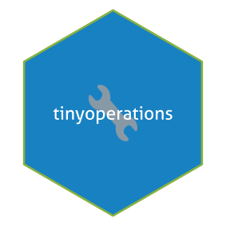

Description & Overview
The tinyoperations R-package adds some functions and infix operators to help in your programming etiquette. It primarily focuses on 4 things:
- Safer decimal (in)equality testing, safer atomic conversions, and other functions for safer coding.
- A new package import system, that combines the benefits of aliasing a package with the benefits of attaching a package.
- Extending the string manipulation capabilities of the
stringiR package. - Reducing repetitive code.
The tinyoperations R-package has only one dependency, namely stringi. Most functions in this R-package are fully vectorized and optimized, and have been well documented.
WARNING: This package is still very much experimental. Function names, argument names, and so on may change dramatically. Use it for testing only, until it’s stable.
Currently this R package is only available on GitHub.
Although this is a relatively small R package, I do understand you may not want to go through all the articles and help files of tinyoperations without knowing if the R package is even worthy of your time. Therefore, to get a quick glimpse of what is possible in this R package, I invite you to take a look at the Get Started page on the website (https://tony-aw.github.io/tinyoperations/articles/tinyoperations.html).
Installation
One can install tinyoperations from github like so:
remotes::install_github("https://github.com/tony-aw/tinyoperations")And attach the package - thus exposing its functions to the namespace - using:
and one can open the introduction help page of the tinyoperations package using:
tinyoperations::tinyoperations_help()
Reporting issues and giving suggestions
When you coming across an issue with the tinyoperations R package, you may want to report it in the “Issues” tab on the GitHub page (https://github.com/tony-aw/tinyoperations/issues). If relevant, please provide reproducible R code, as that will make it easier to diagnose the issue. Please keep issue reports polite, professional, and to the point.
If you have suggestions, know that suggestions are always welcome. Please submit your suggestions in the “Discussion” tab on the GitHub page (https://github.com/tony-aw/tinyoperations/discussions). Questions that are not issues can also be provided there.
History of this R package
This R package started out as just a semi-random collection of infix operators, most of them related to string manipulation. This then turned into more specifically extending the capacities of the stringi R package. Along the way I realized that infix operators are not very user-friendly when used via :: or via a package alias, which resulted in the creation of the import_inops() function. This in turn resulted in the entire import system. And thus we get to the current state of the R package.
Changelog and status
CHANGELOG (EXPERIMENTAL VERSIONS):
- 8 March 2023:
stringiis now a dependency. Completely re-written the ReadMe file, Description, and documentation. - 9 March 2023: added the “which”-operators.
- 10 March 2023:
s_strapply()now usesstringi, and usesapply()instead ofsapply(). Renamed the which operators%[sp]%and%[!sp]%to%[grep]%and%[!grep]%to make their meaning more obvious. Added this Change log to the ReadMe file. - 11 March 2023: replaced the “which”-operators with the
transform_if()function and the subset_if operators. - 13 March 2023: changed the name and argument convention of many of the string related functions to be more consistent. Changed the return of non-matches in the substr_-functions.
- 14 March 2023: changed the utility function to the
%m import <-%operator. Fixed some linguistic mistakes in the documentation. Added a full documentation pdf. Fixed bugs in allsubstr_-functions. Addedcodefactorbadge. Fixed some errors in the Description file. Created and added the pdf manual. Fixed some minor errors in this Read-Me markdown file. - 17 March 2023: added infix operators for custom row- and column-wise sorting of matrices. Slightly optimized the
substr_arrange()function, and added theopts_collatorargument to it. Re-ordered the sections of this Read-Me file. Adjusted the documentation the reflect the new changes. - 19 March 2023: removed the
s_strapply()function in favor of the now newly addedstri_join_mat()function and its aliases. Renamed the matrix re-order operators to%row~%and%col~%. Added a random order option to thesubstr_arrange()function. Adjusted the description, documentation, and this Read-Me file to reflect the new changes, and also fixed some spelling errors. Hopefully this will be one of the last major changes I have to make to this R package. - 25 March 2023: Now tests using
testthatadded for theR CMD checks. Thex %n&% yoperator now returnsNAif eitherxoryorNA. The%s+%and%s*%operators now usestringi’s equivalent operators, for more consistency; their in-place modifiers are affected as well. Corrected some small spelling- and grammatical errors in the documentation and the Read-Me. - 28 March 2023: Small textual changes to the Read-Me file.
- 4 April 2023: Added the
x % f{}% bndandx % f!{}% bndoperators. Adjusted the%?=%operator: nowNA %?=% Infand similar equality checks will also returnTRUE. Added more tests withtestthat. Adjusted the Read-Me file and documentations in accordance with these changes. - 8 April 2023: Added the
import_data()function. Adjusted the documentation and this Read-Me file accordingly. - 11 April 2023: Added the
force_libPaths()function. Shortened the Description text. Adjusted the documentation and this Read-Me file accordingly. Fixed some grammatical errors in the documentation. - 17 & 20 April 2023: Small textual changes to the documentation and Read-Me. file.
- 22 April 2023: Added more tests for
stri_locate_ith(). - 22 May 2023: Re-arranged the sections of the Read-Me file. Removed the CodeFactor badge as it was bugging out for some reason.
- 25 May 2023: The
stri_locate_ith()function slightly re-written to be even faster, and improved its documentation. Edited the description. Changed the documentation regarding matrix operators, as I suspect the usage of the word “rank” might be confusing. Also edited this Read-Me file a bit. - 27 May 2023: Changed the naming convention of in-place modifiers to end with
=%. Added theimport_lsf()function. Fixed a mistake in the documentation of thetransform_if(). - 29 May 2023: The
stri_locate_ith()now returns a matrix likestri_locate_first/last. Moreover, I replaced themapplycall with only vectorized functions;stri_locate_ith()is now almost as fast as thestringifunctions it calls. - 30 May 2023: Fixed some lingering mistakes in the documentations, that were left over since the changes from 29 May 2023.
- 4 June 2023: Major changes this time. The
tranform_if()function now allows the user to specify 2 transformation functions, one for if the condition isTRUE, and the other forFALSE. Added theimport_inops()function. Changed thealias %m import <-% pkgsoperator into theimport_as()function. Added thepkgs %installed in% lib.loc%operator. Re-arranged this Read-Me file a bit. - 15 June 2023: Rewritten this Read-Me a bit. Added a module import system (
alias %source module <-% list(file=...)operator andsource_inops()function). - 16 June 2023: RENAMED THIS R-PACKAGE TO
tinyoperators, to prevent confusion as it holds to thetinyversephilosophy, rather then the “tidy philosophy”. Fixed some minor errors in the documentation. Removedforce_libPaths(), as it may encourage bad coding practices. - 19 June 2023: Replaced the in-place mathematical modifiers with a generalized, function-based in place (mathematical) modification operator,
%:=%, to solve precedence issues. Renamedalias %source module <-% list(file=...)toalias %source from% list(file=...). Edited the documentation a bit. - 20 June 2023: Extended the import section of this Read-Me more.
- 21 June 2023: Migrated the tests from
testthattotinytest. Added tests for the new%:=%operator. Adjusted the documentation, and this Read-Me file. Renamed the%source from%operator to%@source%. Removed the%installed in%operator. - 26 June 2023: Another major change. Made
import_as()much, much stricter. Brought back thepkgs %installed in% lib.loc%operator. Adjusted the documentation accordingly. Asked some people to start testing the R package, as it is nearing it’s final form before getting out of the experimental life cycle. - 27 June 2023: Fixed a bug in the
lib.locargument of theimport_functions. Made the output of theimport_functions a little bit more compact. Fixed a small bug in an internal function. Added thebaseandrecomarguments to thepkgs_get_deps()function. Clarified the documentation a bit. Fixed some spelling errors. Extended the example in the “import” section of the Read-Me. The Read-Me now has section numbers. - 28 June 2023: renamed the
dependsandextendsarguments ofimport_as()todependenciesandextenions, to avoid confusion, and added theforeign_exportsargument as well. - 1 July 2023: Added the
overwriteargument toimport_as(), and made its alias checks more rigorous. Adjusted the documentation a bit. Added some more tests. Fixed some minor bugs in thesource_modulefunctions. - 2 July 2023: Removed the
overwriteargument fromimport_as()(that was a short-lived argument…), as I’ve found it to be more annoying than it’s worth. Added more internal checks to theimport_andsource_modulefunctions. Error messages now display the used exported function instead of internal functions. Adjusted the documentation and Read-Me accordingly. - 3 July 2023: a tiny update; just fixed some minor documentation issues.
- 9 July 2023: MAJOR UPDATE + RENAMED PACKAGE TO
tinyoperations. Details:… Replaced the%::?%operator with thehelp.import()function. Theimport_as()function now also adds attributes to the alias. Renamed theimport_lsf()function topkg_lsf(). Renamed thepkgs_get_depsfunction topkg_get_deps, as this functions only accepts a single package anyway, and also partially re-wrote the function to give more consistently ordered character vectors. Added theoverwriteandinheritsarguments toimport_inops(). The argumentdependenciesinimport_as()now only accepts an explicit character vector as input, as usingTRUEmay result in the ambiguous load-order of the dependencies. Each of theimport_functions now have their own separate help page, and also added thetinyoperations_importpage, to keep it more organized. Moreover, Added more tests for theimport_andsource_modulefunctions. Added themisc- functions. Replaced all mentions of “float” with “decimal”, and replaced all float truth testing (%f) to be decimal number truth testing as (%d). Removed the Natural number option from the logical operators. Adjusted the documentation in accordance with the aforementioned changes, improved the lay-out of the documentation, and clarified the documentation even more. - 11 July 2023: last update unintentionally created a bug; bug now fixed. Added some minor features (see Details). Details: Last update unintentionally created a bug; bug now fixed. Also added the
verboseargument toimport_as, as the function now gives info on conflicts and so on in its attributes. Created some fake packages JUST for the sake of thorough testing. The tests are not part of R CMD CHECK (because it doesn’t like packages defined inside package folder), and not uploaded here on GitHub; but I do perform the test with fake packages everytime I update this R package - 22 July 2023: UPDATED TO R4.3.0. Simplified the internal code of the
%installed in%operator. Removed thesubstr_- functions, and subsequently also thestringfishfunctionality: They were originally created for historical reasons that are no longer relevant (stri_locate_ithused to output a list; now it outputs a matrix), and the stringfish functions had some unwanted behaviour, and working around these unwanted behaviours turned out to be more trouble than was worth. Added thestrcut_- functions. Theimport_as()andimport_inops()functions now create LOCKED objects, for additional safety (more information can be found on this by runningimport_lock()). Added thedeleteargument to theimport_inops()function. Theimport_inops()function now allows almost complete freedom in choosing which packages to expose infix operators from. Added the safer atomic type casting functions (as_bool(),as_int(),as_dbl(),as_chr()). Thetransform_if()function now also has theotherandtextarguments. Some minor optimization improvements for some of the functions.Adjusted the documentation in accordance with all these changes. Fixed some minor spelling and grammar errors in the documentation. Created a GitHub site usingpkgdown, but it’s not published yet. - 25 July 2023: Small update. Added the
report_inops()function, clarified the documentation atimport_inops(), and split the import article into 2. - 28 July 2023: Another small update. Simplified the import lock system. Moved part of the arguments of
import_inops()toimport_inops.control(). - 29 July 2023: The
report_inops()function no longer checks if infix operators are locked, considering yesterday’s change of the import lock system. The@sourceoperator now creates a locked environment just likeimport_as(). Adjusted the documentation here and there. Added hyperlinks to external package references in the website. - 3 August 2023: Overhauled the source module import system; it now has a single function, namely
source_selection(). Removed thetextargument fromtransform_if(), and it now also accepts logical vector for argumentcond, and also accepts atomic scalars for argumentsyes, no, other. Adjusted the documentation accordingly. Fixed a few typos and grammatical mistakes in the documentation. - 4 August 2023: Really tiny update. Also added more tests (there are now about 300 tests).
- 9 August 2023: Now the
import_inops()function can directly accept an alias object to expose infix operators from; argument convention slightly changed. Added convenience pattern functions;s_pattern()is now simply a reference to the help page, and not a function on its own. Replaced the%sgrep%operator with the%s{}%and%s!{}%operators. Adjusted the documentation accordingly. Also added more tests; there are now about 400 tests. - 16 August 2023: special attributes from alias objects can now be more neatly retrieved using the
attr.import()function. Theargsspecial attribute from alias objects now also reports thelib.locargument. Slightly re-organized the special attributes contained in alias objects. Removed theverboseargument fromimport_as(), as I deemed it unnecessary. - 18 August 2023: added more safe guards for the import system, and added more tests. The
import_as()function now also adds theordered_object_namesattribute to aliases. This is only needed for testing purposes, but I now allow the user to see this attribute also. Also experimenting withpkgdownoptions. - 19 August 2023: Textual changes here and there.
- 24 August 2023: Changed the organization of the categories: decimal truth testing,
lock_TF(), safer atomic type casting, and%<-c%now belong to the category “safer functionality”. The atomic conversion functions now remove the class attribute, just to be safe, but still preserve all other attributes. - 25 August 2023: Added safety against recycling in the decimal (in)equality testing operators. Moved the the regular tests library. This does create a note on
R CMD CHECK, but it is neater this way. - 30 August 2023: Removed the in-place modifying string operators. Removed the renaming option in
source_selection(), as I think it might cause problems. Slight speed improvements in some functions. Added theis.tinyimport()utility function. - 1 September 2023: Moved
source_selection()to the “misc” category. Specifying non-existing infix operators in theexcludeorinclude.onlyarguments ofimport_inops()will now produce a warning message. - 8 September 2023: Removed Non-Standard Evaluation in
aliasargument ofimport_as();aliascan now instead by specified as either a string or a one-sided formula with a single term. Added two miscellaneousimport_functions:import_LL()andimport_int();import_inops()therefore now also takes exposed functions fromimport_LL()into consideration. Changed the argument order inimport_data()to be more consistent with the otherimport_- functions. Made sure allimport_- functions have proper library location checks. Changed the documentation and website in accordance with the aforementioned changes. Fixed some spelling errors in the documentation. Added more tests (almost 700 tests now; so approximately 10 tests per function on average). Added more examples to the documentation. - 9 September 2023: Removed the recycling restriction in the decimal truth testing operators, to be more consistent with the
stringitruth testing operators.
FUTURE PLANS:
I believe tinyoperations is slowly getting closer to becoming stable. There does not appear a need to add/remove many more functions/operators, although some functions, operators or arguments may need to be tweaked and/or optimized. Once I am fully satisfied with the R package, I may attempt to publish this R package to CRAN.